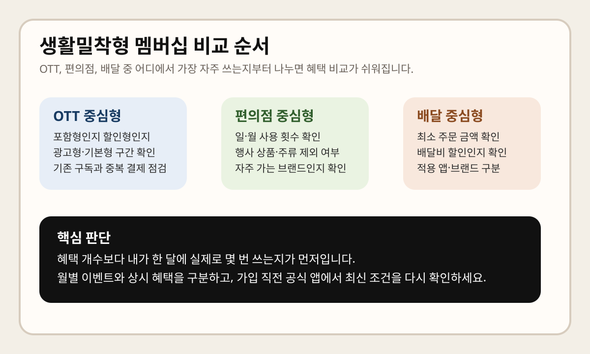

생활밀착형 멤버십을 찾는 사람은 보통 "어디가 혜택이 제일 많나"보다 내가 실제로 자주 쓰는 OTT, 편의점, 배달에서 얼마나 바로 체감되나를 궁금해합니다. 최근 멤버십 소개 페이지를 보면 통신사와 생활 서비스가 이런 일상 소비 구간을 전면에 내세우는 경우가 많지만, 막상 가입 직전에는 할인 횟수, 대상 브랜드, 이용 등급, 중복 가능 여부 때문에 체감이 크게 달라집니다.
이 글은 2026년 3월 20일 기준으로 확인 가능한 SK텔레콤 T 멤버십 공식 사이트, KT 멤버십 공식 페이지, LG U+ 혜택 페이지처럼 각 사업자의 공식 멤버십 안내를 다시 확인할 때 무엇을 먼저 봐야 하는지 정리한 체크리스트입니다. 제휴 브랜드와 월별 프로모션, 사용 조건은 수시로 바뀔 수 있으니, 실제 가입·변경·결제 직전에는 반드시 해당 멤버십의 최신 공식 페이지와 앱 공지를 다시 확인하세요.

생활밀착형 멤버십은 먼저 3가지로 나눠 보세요
- OTT 중심형: 영상·음악·디지털 구독을 이미 매달 결제하고 있는 경우
- 편의점 중심형: 소액 결제를 자주 하고, 출근길이나 야간 구매 빈도가 높은 경우
- 배달 중심형: 배달비와 주문 횟수가 월 지출에 크게 영향을 주는 경우
이렇게 나누는 이유는 단순합니다. 생활밀착형 멤버십은 혜택이 넓어 보여도 실제 절약은 한 달에 몇 번 쓰는지에서 갈립니다. OTT를 거의 안 보는데 편의점 쿠폰보다 OTT 제휴가 많은 멤버십을 고르면 체감이 약하고, 반대로 배달을 거의 안 시키는데 배달 중심 멤버십을 고르면 월 구독료만 남을 수 있습니다.
OTT 혜택은 "포함"인지 "할인"인지부터 확인
OTT 제휴는 가장 헷갈리기 쉬운 구간입니다. 공식 멤버십 페이지를 보면 콘텐츠 구독을 전면에 내세우는 경우가 있지만, 실제 구조는 크게 다릅니다. 월 구독권이 포함되는지, 일부 할인만 되는지, 특정 등급이나 별도 구독 상품에서만 가능한지가 각각 다를 수 있습니다.
- 이미 쓰는 OTT와 정확히 일치하는 혜택인지
- 광고형, 기본형, 프리미엄형 중 어느 구간까지 적용되는지
- 멤버십 기본 혜택인지, 별도 유료 구독 묶음인지
- 신규 가입자 전용인지, 기존 이용자도 유지 가능한지
특히 OTT는 내가 현재 쓰는 요금제와 중복 결제되는지를 꼭 봐야 합니다. 이미 다른 통신 결합, 카드, 앱스토어 결제로 구독 중이라면 멤버십 혜택을 붙여도 실익이 적을 수 있습니다.
편의점 혜택은 횟수와 제외 품목을 같이 봐야 합니다
편의점 제휴는 사용 빈도가 높아 체감이 빠르지만, 실제 조건도 가장 자주 바뀝니다. 공식 안내를 보면 할인율만 크게 보이고, 아래에는 일 1회, 월 n회, 행사 상품 제외, 주류·담배·서비스 상품 제외 같은 조건이 붙는 경우가 많습니다.
그래서 편의점 중심형이라면 아래 네 가지를 먼저 체크하는 편이 안전합니다.
- 내가 자주 가는 브랜드가 실제 제휴처인지
- 오프라인 결제만 되는지, 앱 주문이나 픽업도 되는지
- 통합 바코드나 멤버십 앱 제시가 필요한지
- 1+1 행사, 카드사 할인, 포인트 적립과 중복 가능한지
생활밀착형 멤버십이 편의점에서 강해 보여도, 내가 가는 매장 브랜드가 다르거나 제외 품목 구매 비중이 높으면 실제 체감은 생각보다 작을 수 있습니다.
배달 혜택은 주문 최소 금액과 적용 방식이 핵심입니다
배달 혜택은 숫자상으로 가장 매력적으로 보이지만, 실제 사용성은 주문 방식에 많이 좌우됩니다. 공식 페이지나 앱 공지에서 자주 달라지는 부분은 배달만 되는지, 포장도 되는지, 최소 주문 금액이 있는지, 특정 결제수단이나 쿠폰함 등록이 필요한지입니다.
- 월 몇 회까지 적용되는지
- 배달비 할인인지, 주문금액 할인인지
- 배민·쿠팡이츠·요기요 같은 앱 전체 대상인지, 일부 브랜드 제휴인지
- 주문 취소 시 쿠폰 복원 규정이 있는지
배달형 멤버십은 보통 월 주문 횟수가 이미 높은 사람에게 유리합니다. 한두 번만 시키는 사람은 혜택이 남아도고, 자주 시키는 사람은 배달비나 최소 주문 조건 때문에 손익분기점이 더 빨리 나옵니다.
어떤 사람에게 어떤 유형이 맞을까
OTT 지출이 고정비처럼 나가는 사람
매달 같은 콘텐츠를 보는 편이라면 OTT 혜택이 있는 멤버십이 먼저입니다. 다만 "제휴 있음"만 보지 말고 내가 실제 결제 중인 서비스와 요금 구간이 맞는지를 공식 페이지에서 다시 봐야 합니다.
출근길과 야간 소액 결제가 많은 사람
편의점 구매가 잦다면 적은 할인이라도 누적 체감이 큽니다. 이런 경우는 할인율보다 사용 횟수와 제외 품목이 더 중요합니다. 자주 쓰는 브랜드 한 곳에서 꾸준히 적용되는 혜택이 여러 브랜드에 가끔 적용되는 혜택보다 낫습니다.
월 배달 주문이 여러 번 반복되는 사람
배달형은 주문 횟수가 많을수록 유리합니다. 대신 특정 앱이나 특정 제휴 브랜드 중심인지, 배달비만 줄어드는지, 포장 주문에서도 적용되는지를 먼저 확인해야 합니다.
가입 전에 마지막으로 볼 체크리스트
- 내가 가장 자주 쓰는 소비가 OTT, 편의점, 배달 중 어디인지 적습니다.
- 혜택 개수보다 실제 사용 빈도를 계산합니다. 한 달 4회 이상 쓰지 않으면 체감이 약한 혜택도 많습니다.
- 월별 이벤트와 상시 혜택을 구분합니다. 프로모션이 끝나면 판단이 달라질 수 있습니다.
- 등급, 요금제, 제휴 앱 가입 조건을 확인합니다. 일부 혜택은 특정 등급이나 별도 구독형 서비스에서만 열립니다.
- 기존 카드 할인이나 다른 구독과 중복되는지 봅니다. 이미 받고 있는 할인과 겹치면 실익이 줄어듭니다.
한 번에 요약하면
- 생활밀착형 멤버십은 혜택 수보다 내 지출이 몰리는 카테고리가 더 중요합니다.
- OTT는 포함인지 할인인지, 편의점은 횟수와 제외 품목, 배달은 최소 주문 금액과 적용 방식을 먼저 봐야 합니다.
- 생활 혜택은 월별 프로모션이 많아 상시 혜택과 이벤트성 혜택을 구분해야 합니다.
- 실제 가입 전에는 각 사업자의 공식 앱과 멤버십 상세 페이지에서 최신 조건을 다시 확인하는 것이 가장 안전합니다.
자주 묻는 질문
Q. 생활밀착형 멤버십은 혜택이 많은 곳이 무조건 좋은가요?
아닙니다. 내가 자주 안 쓰는 카테고리의 혜택이 많아도 체감 절약은 작습니다. 자주 쓰는 한두 영역에서 꾸준히 적용되는 혜택이 더 실용적입니다.
Q. OTT 혜택이 있으면 따로 구독을 끊어도 되나요?
그렇지 않을 수 있습니다. 공식 페이지에서 포함형인지 할인형인지, 특정 요금제나 별도 구독 묶음 전용인지부터 다시 확인해야 합니다.
Q. 편의점과 배달 혜택은 왜 자꾸 체감이 다르다고 하나요?
할인율보다 사용 횟수 제한, 제외 품목, 최소 주문 금액, 앱 결제 조건이 실제 체감에 더 큰 영향을 주기 때문입니다.